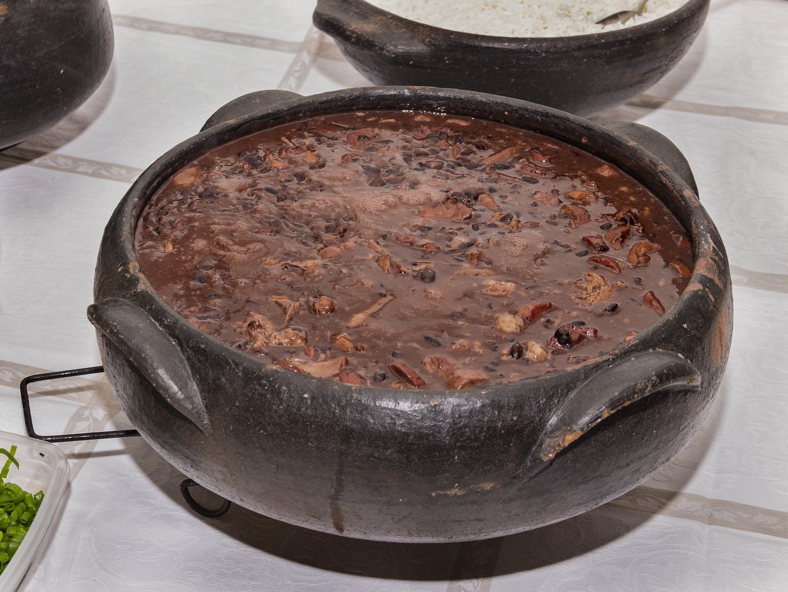
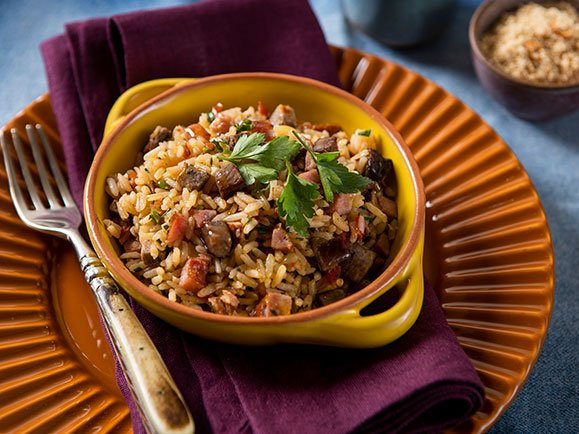
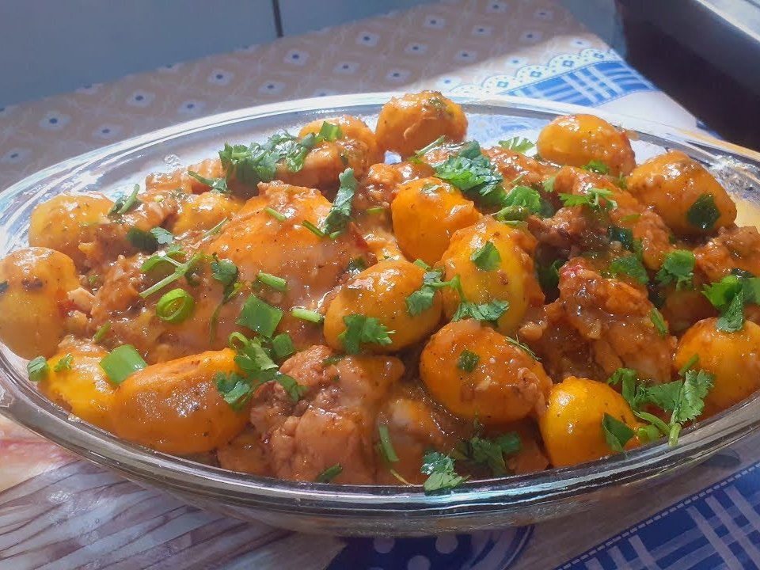
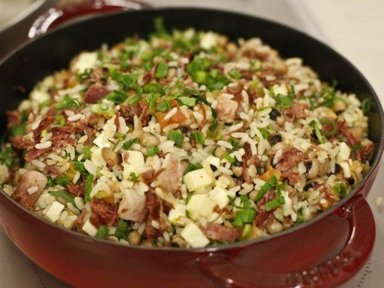

Brasil: comidas típicas
Início
|
Receitas
Receitas
Clique nas imagens abaixo e você será redirecionado as respectivas receitas!

Feijoada
Pato no tucupi

Arroz de carreteiro

Frango com pequi

Baião de dois